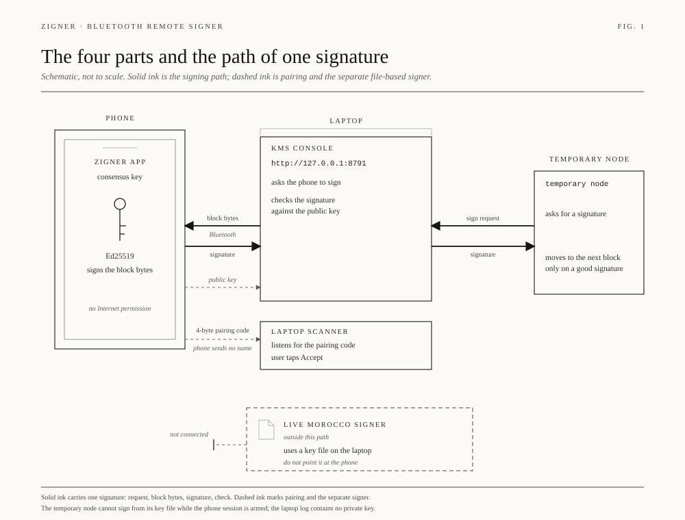
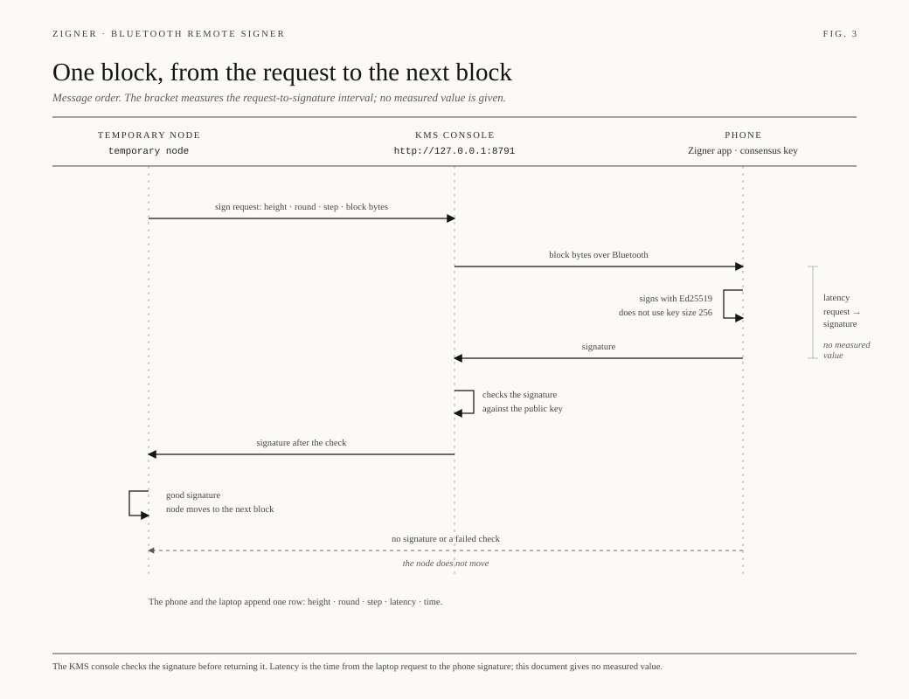
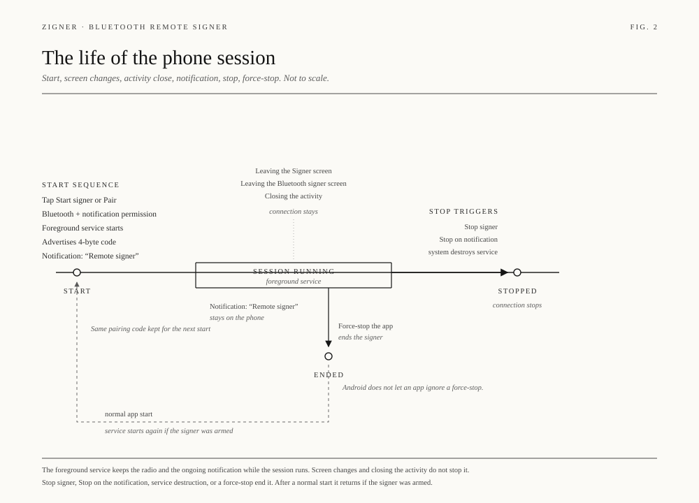
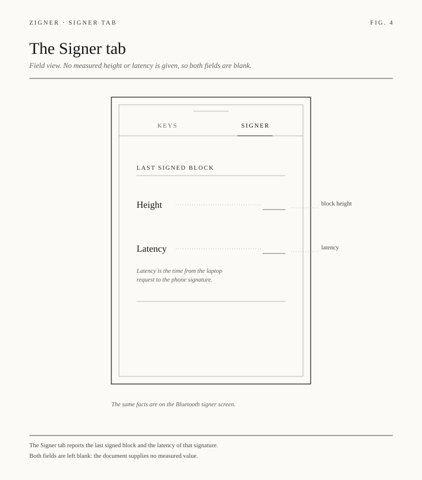

Phone
Zigner
The Signer tab is a list of validators. Open one key and that key has Status, History, and Chain. Start and Stop arm the radio for that key. The consensus seed stays on the phone.
Fork demo
Three forks, one signer. Zigner keeps the consensus key. The KMS console dials the node and carries the block bytes. cw-orch-kms is the session the granter signs before any contract moves.
The Signer tab is a list of validators. Open one key and that key has Status, History, and Chain. Start and Stop arm the radio for that key. The consensus seed stays on the phone.
The console dials the node. Signing is the open section once the key is a validator. Connect, create, and key export fold into one line until they are needed. Signatures scroll inside their own table.
The first document is the granter challenge: the key that signs it becomes the granter. The next document is an ordinary amino session grant. Gas is THIOL. Stake is TERP.
The phone signs. The console checks. The node receives the signature. A file-backed signer stays on its own path.




This is a picture of the product, on this page. The live console is the KMS process. The live key stays on the phone.
| Network | Terp |
|---|---|
| Chain | the configured chain |
| Height | — |
| Role | Validator |
| Granter | the selected Terp account |
| Radio | Off |
Start opens the radio for this key. Stop closes it.
The node asks. The phone signs. Recent signatures stay in this box.
| Height | Step | Round trip |
|---|
Each validator opens on its own. Status is a table of labels and values. History uses the theme type, and it scrolls inside the page.
Votes travel inside a Noise session. The phone and the laptop each keep a pin. A missing pin refuses the next peer. The high-water mark keeps the vote and allows the extension beside it.
Finished steps fold. Signing stays open. The fee on a grant is THIOL and is sized for create and the revoke that follows.
The first cw-orch document is cw-orch-granter:v1 plus one binding line. The phone signs those raw bytes. The amino session that follows stays a transaction card.
The phone wraps consensus seeds with the keystore. The laptop identity is sealed outside the temporary directory. A recovery checks the secret and does not write it down.
Stable USB, more than one platform, and more than one node. Penumbra and Zcash nodes. Mesh and threshold support for failover, geography, and shard rotation.